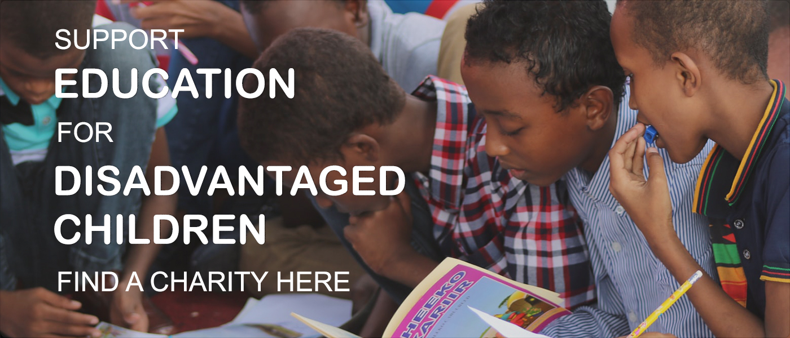

Bookmarks

Search Charities
Search for your charity
Select Cause
Animals
Culture
Education
Health
Changing of laws
Environment
Human rights
Miscellaneous
Reconciliation, respect, and tolerance
Religion
Social and public welfare
Public security
Indigenous and/or Torres Strait Islanders
Adults
Elderly
Children
Overseas communities
Early Childhood
Ethnic Groups
Families
Females
Financially Disadvantaged
LGBTQIA
Australian Community
Males
Migrants, Refugees and Asylum Seekers
Other Beneficiaries
Other Charities
At Risk of Homelessness
Chronic Illness
People with Disabilities
Pre and Post Release Offenders
Rural and Remote Communities
Unemployed Persons
Veterans
Victims of Crime
Victims of Disasters
Youth
Select State
ACT
NSW
NT
QLD
SA
TAS
VIC
WA
Search
Charity Facts